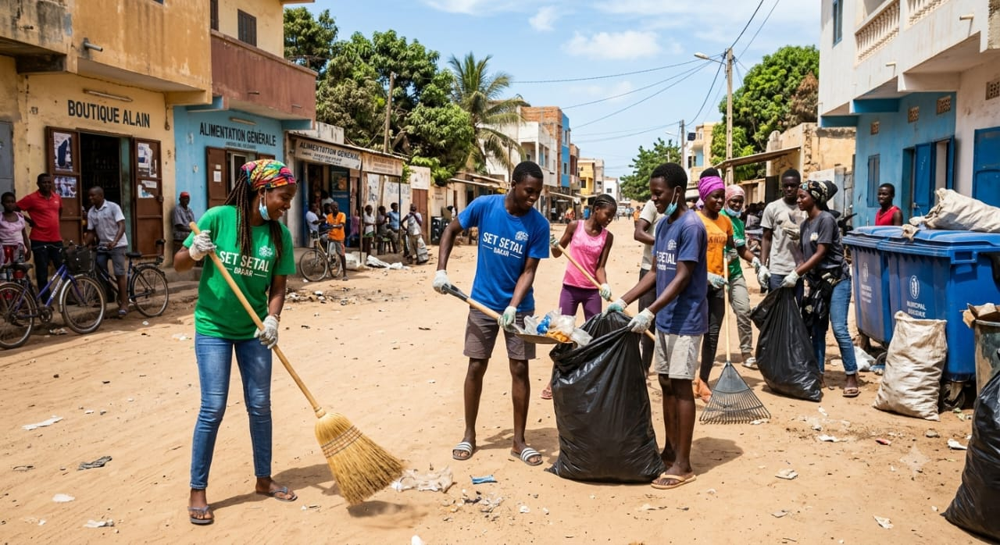

Soutien Scolaire BFEM BAC
Ateliers d'aide aux devoirs et préparation intensive aux examens. Parce qu'un cours particulier ne devrait pas coûter 25.000F.
Nos profs sont des bénévoles étudiants de l'UCAD et de l'UGB qui ont déjà eu leur BFEM et BAC avec mention.
Au programme :
- Maths, Physique-Chimie, SVT
- Français, Anglais, Histoire-Géo, Philo
- Méthodologie, gestion du temps et du stress le jour de l'examen
Quand ? Tous les week-ends, samedi et dimanche de 10h à 13h. Cours gratuits.

Atelier Numérique
Formation d'initiation au code, à la bureautique et à la sécurité numérique , au marketing digitale
et à l'entreprenariat numérique pour les jeunes de 15 à 25 ans.
L'objectif : te donner les bases pour trouver un stage, créer ton CV en ligne ou lancer ton petit business.
Ce que tu vas apprendre :
- Initiation code : HTML, CSS, logique de programmation
- Bureautique utile : Word, Excel, Canva, créer un CV pro
- Sécurité numérique : protéger son Facebook, éviter les arnaques Orange Money
- marketing digitale et entreprenariat numérique : technique de vente, base du digitale
Matériel : Ordinateurs fournis sur place. Aucun niveau requis, on part de zéro.

Set-Setal Nettoyage
Journées de nettoyage communautaire dans les quartiers de Dakar.
Nous ne venons pas juste nettoyer,
nous venons réveiller la conscience citoyenne.
Chaque samedi, nous choisissons un quartier avec les habitants.
Ce que nous faisons sur place :
- Mobilisation citoyenne : jeunes, femmes, anciens, tout le monde participe
- Matériel fourni : gants, râteaux, sacs, brouettes
- Ambiance conviviale : attaya, musique, repas partagé
- Tri et évacuation des déchets avec les services de la mairie